Every graph starts with one of these. A generator takes no image (a few take an image or a curve to steer themselves) and produces the first buffer a filter or a blend will work on: a flat tone, a field of noise, a lattice of stamped shapes, a curve rendered as a stroke. Some paint a whole canvas at once (Noise, Pattern, Gradient); others place discrete instances (Tile, Splatter, Scatter on Path) and answer differently at every pixel depending on which instance reaches it.
Most generators write RGB only, at full alpha. On the ones with a Black bg row, unchecking it turns either a dark reading into transparency or a shape's own border into it, which matters the moment the result feeds Bevel, Normal or Height Blend downstream.
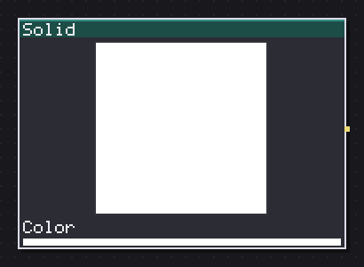
Fills the whole canvas with one flat color.
The flat fill, one color across the canvas. On its own it is a background swatch; wired into Blend or Paint as the Base, it becomes the tone a mask paints on top of. I use it more as scaffolding while building a graph than in a finished recipe: drop a Solid behind a stack of masks so each one can be judged in isolation before wiring the real texture underneath.
Color is the only knob, keyable, so a Solid can carry a color cycle (day to night, a status light) through a whole graph without touching anything downstream. Set its alpha to 0 to get a fully transparent buffer, useful as a base for Layer Stack or Paint when the unmasked areas should stay empty rather than filled.
In: nothing · Out: image
Parameters
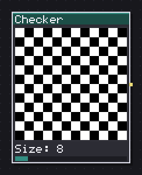
Alternates two colors on a board of square cells.
The classic two-tone board. Past the test-pattern use, at a coarse Size it doubles as a floor tile base for a Bevel or Normal chain, and at a fine one it is close to a dither.
Size sets the cell in pixels; Size Y at 0 keeps it square, raised it stretches the cells into bricks-without-offset. Angle rotates the whole board around the canvas center, the only way to get a diagonal check without a Transform node afterward. Soft turns the hard edge into a falloff a quarter cell wide at 100, so the board reads as a height map rather than a mask, ready for Bevel.
Offset X/Y slide the board in pixels rather than percent, which matters if you plan to key them: a Size 8 board keyed from Offset X 0 to 16 loops exactly.
In: nothing · Out: image
Parameters
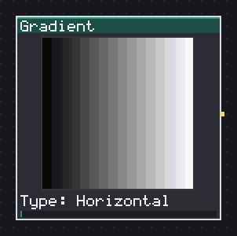
Paints a linear, radial, angular, diamond or spiral ramp between two colors.
Nine ramps between two colors: the four axis-aligned or angled ones for a sky or a metal sheen, the four centered ones (Radial, Angular, Diamond, Square) for a glow or a vignette, and Spiral for a whirlpool.
Center X/Y only apply to the five centered modes; move them to put a glow off to one side rather than dead center. Ease reshapes the ramp itself: Smooth softens both ends, Ease In and Ease Out lean the falloff toward one side, useful when a straight Linear reads too mechanical for a light falloff. Beyond decides what happens past the two ends: Clamp holds the last color (the default, a vignette), Repeat and Mirror loop it, which is how a single Gradient becomes a striped or chevron field once rotated and offset.
Offset is the one to key for a scrolling or pulsing gradient; with Beyond set to Repeat it wraps cleanly frame to frame.
In: nothing · Out: image
Parameters
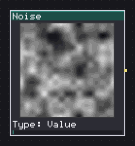
Generates procedural noise: fractal, cellular, marble, wood or white, with warp and octaves.
Fourteen kinds under one node, grouped by family: smooth lattices (Value, Perlin), the four fractal folds built by stacking octaves (Clouds, Billow, Ridged, Turbulence), two shaped fields that bend a periodic function (Marble, Wood), Plasma, the two Worley cell fields (Cells, Voronoi Edges), and three that are not a lattice at all (White, Sparkle, Blue).
For the octave kinds, three numbers decide the look: Octaves is how many layers, Lacunarity how much the frequency jumps between them (200 is the classic doubling), Gain how much amplitude survives each jump (50 keeps the usual half; past 70 the result leans toward White). On Cells, Cell output F2-F1 draws the wall between cells at exactly zero on the bisector, the cell-wall look a lot of stone and dried-mud recipes want; Cell jitter at 0 turns the field into a regular grid.
Warp bends the sampling coordinate by another noise before reading the primitive; past 50 the underlying lattice stops being readable, and it still tiles because the warp shares the same period. Seamless tiling is on by default; turn it off only when a free Angle is needed, since a rotated lattice cannot close on itself.
In: nothing · Out: image
Parameters
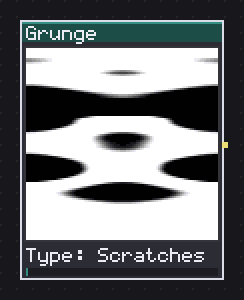
Dirties with procedural scratches, fibers, drips, rust, dust or cracks.
Procedural wear in eight modes, all sitting on the same lattice Noise uses, so it tiles the same way. Scratches, Fibers and Leaks read as parallel marks; Rust needs two lattices at once (a stretched one for the drip, the plain one for the metal it eats into) so rust only shows where both agree; Cracks and Concrete read the Worley border rather than the cell body.
Direction and Stretch only apply to the streaky modes (Scratches, Leaks, Rust): Stretch elongates the lattice up to 16 times along that direction, which is what turns a blob field into a scratch. Density and Softness work everywhere: Density is how much of the canvas the wear covers, Softness widens the edge from a hard cut into a gradient, which matters if the result feeds a Bevel afterward rather than a plain mask.
I reach for this ahead of hand-painting a worn metal or plaster texture: Rust with Direction Vertical over a Solid, blended Multiply, gets most of the way to a drip without a single pixel painted by hand.
In: nothing · Out: image
Parameters
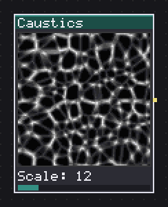
Draws the light mesh of water with warped cell edges.
The light mesh you see through moving water, built from the same Worley cell borders as Noise's Voronoi Edges, but with the lookup itself pushed around by a lower-frequency noise so the cells never read as a straight diagram.
Layers stacks up to three independent fields and averages their coverage; two or three is what gives the interference look real caustics have, one is closer to a single Voronoi border. Distort is the strength of that domain push; Sharpness narrows the bright line at each cell border into a thinner filament as it rises. Scale Y at 0 matches Scale; raised, the mesh stretches into streaks, which reads as a current across a pool rather than still water.
Tint multiplies the result, so white leaves it a plain grayscale light map and any other color filters it like colored glass. The node always writes fully opaque, so Black bg is what turns the dark background transparent if the light needs to composite over something other than black.
In: nothing · Out: image
Parameters
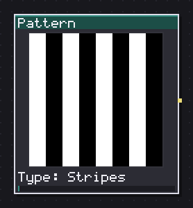
Repeats one of twenty-three motifs on a grid: stripes, bricks, scales, hexagons, weaves.
Twenty-three motifs on one lattice engine: stripes and weaves that are periodic fields, and eleven piece motifs (Grid, Bricks, Dots, Diamonds, Hexagons, Triangles, Scales, Polka and others) that share a jitter, a dropout and a rounded-corner falloff because they are all drawn as a signed distance to one shape per cell rather than a hand-written boolean.
Profile is the row that changes the most: Flat is the plain boolean every version of this node has drawn, and Linear, Round, Bevel and Gaussian turn the same distance into a height, letting a Pattern feed Bevel or Normal directly for a tiled brick or scale relief instead of staying a flat mask. Corner % rounds the piece itself, cheaply, off the same distance. Jitter lum, Jitter size and Dropout read a hash per cell, so a brick wall gets tone variation and the odd missing tile without a second node.
For brickwork, Bond picks real masonry patterns (Running, Stack, Third, Flemish) rather than one fixed half-offset; Row offset only matters for the three that are not Stack.
In: nothing · Out: image
Parameters
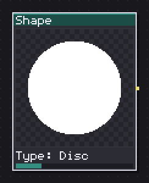
Draws a centered figure -- disc, polygon, star, cross -- with two sizes and a falloff.
One centered figure per node: squares, discs, rings, polygons, stars, a cross, or a soft Gaussian blob. It is the one I reach for most when a recipe needs a single glow, a gem, a UI icon base or a stamp to feed Tile and Splatter's Pattern input.
Falloff decides whether this stays a flat cutout or becomes a height: None is the hard edge every version has drawn, Linear/Round/Gaussian turn the same signed distance into a ramp toward the outline, ready for Bevel or a Normal map. Size and Size Y independently stretch the figure into an ellipse or a stretched cross with no separate Transform. Star has two shapes under one name: Classic is the concave four-armed astroid this node has always drawn, Points switches to a real n-pointed star polygon once more or fewer than four points are needed.
Antialias only matters at the hard edge (Falloff None); with any other falloff the ramp already supplies its own softness, so leave it off there.
In: nothing · Out: image
Parameters
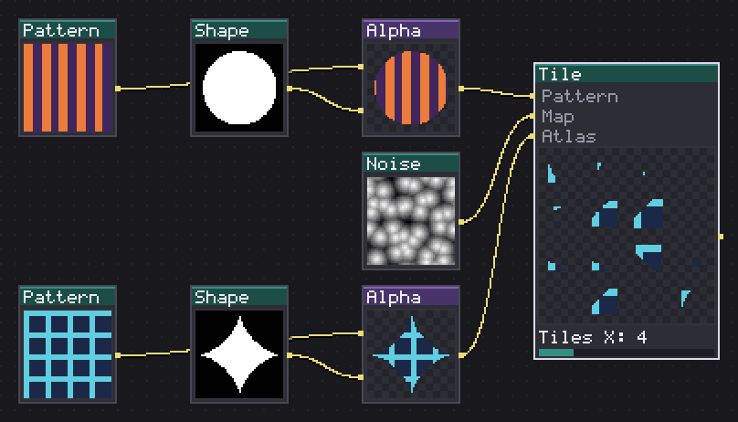
Stamps a shape or an image on every cell of a square, hex or triangular grid.
The grid sampler that places one instance per cell of a square, hex or triangular lattice and lets every pixel ask which instance covers it, so jittered, rotated or resized instances are never clipped at their own cell boundary.
Feed it a Pattern to stamp your own art per cell instead of a built-in shape, or an Atlas sheet with Atlas cols/rows to pick a different sprite per instance (Atlas cell: Random or Sequence). Output repurposes the same field to carry data instead of color: Random Color/Grayscale for variation maps, Index or Position for driving another node downstream, Size for a per-instance mask. Map input does reads a wired Map at each instance's center to drive its size, cut instances out as a mask, or set rotation from luminance.
Lattice Hex and Tri round the tile counts up to an even number to close the seam; on Native Size mode the stamp draws at its own pixels times an integer scale, with no resampling and no rotation, the one to use for hand-drawn pixel leaves and grass blades that must not blur.
In: Pattern (image), Map (image), Atlas (image) · Out: image
Parameters
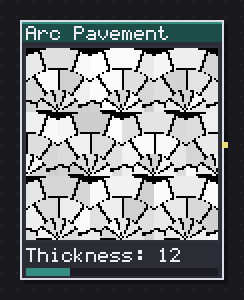
Paves the canvas with fans of cobblestones separated by mortar.
Cobblestone paving in radial fans, cut into rings and wedge-shaped cobbles rather than the square cells every other pattern here uses. Each fan sits in one cell of a Fans X/Y grid; Stagger rows/rings offsets alternating fans and rings by half a cobble so the mortar joints never line up into straight seams, the difference between a paved plaza and a tiled floor.
Rings and Cobbles/ring set the density of the cut; Fan span narrows the wedge from a full half-circle (180, the default) down to a slice, useful for a corner or a path rather than an open floor. Thickness is the mortar width as a percent of the cobble.
Jitter lum and Jitter hue vary each cobble's tone off Cobble, off a per-piece hash, the same way Pattern's brick jitter does; push lum jitter to 30-40 for real stone before reaching for a separate Grunge pass on top. Angle rotates the whole paving, which also rotates every fan's own span.
In: nothing · Out: image
Parameters
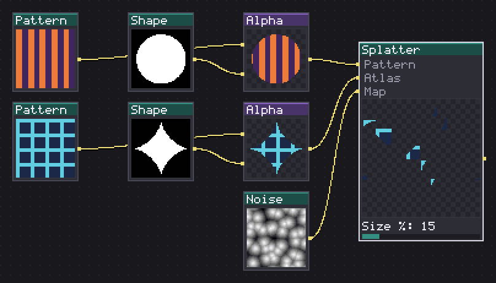
Scatters stamps at random over the canvas, with count, size, spacing and jitter.
Scatters a Count of stamps at random rather than one per cell, so it reads as thrown debris, foliage or blood rather than a grid. Feed a Pattern for your own stamp, or an Atlas sheet to vary which sprite lands where.
Min gap % turns on dart-throwing: each instance tries up to eight hashed positions and is dropped outright if none of them clears the distance from every instance already placed. That is a real limit, not a slider you can push freely: past a certain gap for a given Count, more instances fail to place outright and the field thins out rather than spacing out further, so raise Count alongside Min gap % if the result looks sparser than expected.
Point at Radial aims every stamp away from canvas center (spikes, thorns); Map angle reads the red channel of a wired Map instead, for combing scattered instances along a flow. Output Position/Rotation/Size write per-instance data instead of color, the same vocabulary Tile uses, so a Splatter and a Tile downstream of the same Formula read consistently.
In: Pattern (image), Atlas (image), Map (image) · Out: image
Parameters
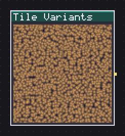
Fills a grid with variants of a Custom definition, one seed per cell.
Renders a grid of variants of a stored Custom node definition, one hashed value per cell rather than one render repeated. Point Custom node at a definition with an exposed parameter (typically a seed) and this node evaluates it once per cell of the Tiles X/Y grid, each time with that parameter rolled to a different value.
Vary picks which exposed entry gets rolled: All seeds walks every exposed seed at once, the one to use for a tileset of, say, six near-identical rocks; naming one entry targets only that knob and leaves the rest of the definition fixed across the grid. Range low/high % clamps how far the roll can wander from the definition's own default, so a family of grass tufts stays a family rather than drifting into unrelated shapes at the edges.
Seam blend % renders every cell oversized by an overlap band and crossfades neighbors across it, so the grid keeps tiling even though every cell is a different variant. Because it has no input and reads no keyframes, the preview is always a still grid, not a demo sweep.
In: nothing · Out: image
Parameters
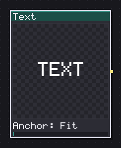
Writes text with the bitmap font, with scale and anchoring.
Bitmap text in the engine's own font, for labels, UI mockups or a pixel-perfect logo baked into a texture rather than typed live in Aseprite. Scale is an integer multiplier on the font's own pixels, so text stays crisp at any size rather than being resampled.
Anchor Fit is the odd one out: it keeps a multi-line block left-aligned as a paragraph while Pos X slides the whole block between flush-left and flush-right; Left/Center/Right instead pin a literal point of the block to Pos X, line by line, which is what you want for a single centered word rather than a paragraph. Spacing adds or removes pixels between glyphs, negative values included, for a tighter or wider set of letters at small sizes.
Wrap around makes the text sample the canvas cyclically instead of clipping at the edge, which only matters if a line is wider than the canvas. Type a literal \n in the single-line field to force a line break where the dialog gives no multi-line entry.
In: nothing · Out: image
Parameters
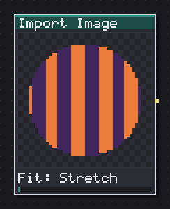
Loads an image file from disk and fits it to the canvas.
Loads a file from disk and fits it to the canvas, which is how an external reference, a hand-painted piece, or a photo source enters a graph that is otherwise all procedural. Fit Stretch resamples to the canvas size, Center places it at 1:1 pixels in the middle (cropped if larger), Tile repeats it at 1:1 with no resampling, the one to use for a hand-authored tiling swatch you do not want the engine to touch.
Scale % applies before the fit, so at Tile it changes how many repeats fit across the canvas, and at Stretch or Center it is a plain zoom. With no file loaded, or a bridge that cannot read one (Studio without that host feature wired), the node returns transparent rather than an error, so a broken path fails quietly rather than breaking the whole render.
I use this to bring in a base photograph for Color Match or a hand-drawn silhouette to feed Bevel, less often as a finished texture on its own.
In: nothing · Out: image
Parameters
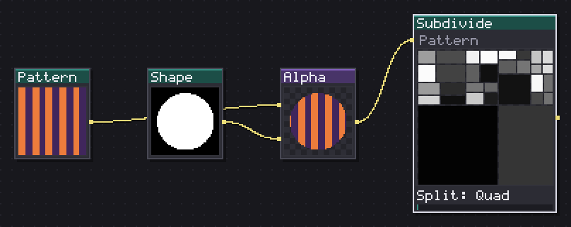
Splits the canvas into ever smaller boxes and fills each leaf.
A quad-tree or a binary split of the canvas into ever-smaller leaf boxes, each one filled on its own: the fractured-flagstone or plank-floor generator. Split Quad cuts each box into four at every level (flagstones, cracked ice); Binary cuts only the box's longer side in two (planks, a strip-wood floor), the difference between a random rectangle carve and a random grid stagger.
Split chance % is rolled per box past the root, so a lower value stops the recursion early in places and leaves larger leaves mixed with small ones; Cut jitter % moves where a cut falls within a box rather than always down its middle. Aspect limit rejects a cut whose children would come out too elongated, which is what keeps Binary from producing slivers at high jitter; leave it at 1 (off) if slivers are exactly what you want.
Fill Pattern tiles a wired image into each leaf at its own aspect (Turn leaves 90 rotates alternating leaves for a herringbone plank look); Depth and Size are grayscale reads of the tree structure itself, useful as a mask rather than a final look.
In: Pattern (image) · Out: image
Parameters
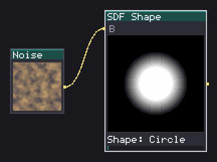
Draws nine primitives by distance, then rounds, repeats, shells and combines them.
Nine primitives drawn by signed distance rather than by a fixed boolean shape, which is what lets Round %, Repeat X/Y, Shell px and the boolean With B operations all work off the same number. It is the node to reach for when Shape's nine figures are not enough, particularly for a Segment, a Capsule or a Cross with an exact pixel Line px width.
With B combines this shape with a second SDF Shape wired into the B input: Union, Subtract and Intersect are the hard booleans; the three Smooth variants round the seam by Smooth %, the way to blend two circles into a rounded blob rather than a sharp figure-eight. Repeat X/Y tiles the primitive across the canvas at an even division, so a single Ring repeated 4x4 is a dot grid with rounded corners for free. Shell px turns any shape, combined or not, into an outline of twice its pixel value in width.
Output Distance is a grayscale field centered on mid-gray at the edge, the form the B input and With B both expect; Mask is a hard cutout, for when this is the last node before a Paint or a Blend rather than another SDF Shape.
In: B (image) · Out: image
Parameters
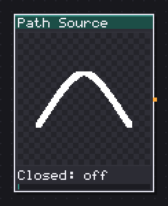
Puts a curve on the wire so several nodes share one stroke.
A curve with no picture of its own: it exists purely so several nodes downstream (Path, Scatter on Path) can share exactly one stroke instead of each holding its own duplicate set of points. Wire its output into more than one consumer and editing the shape once moves all of them together.
Closed joins the last point back to the first, turning an open line into a loop, which matters for anything that reads the curve's length (Scatter on Path's spacing, Path's taper). Smooth runs a Catmull-Rom pass through the control points instead of drawing straight segments between them, on by default; turn it off for a deliberately angular path (a lightning bolt, a crack) rather than a flowing one.
I add one of these the moment a recipe needs the same river or crack in two places, a stroke and a scatter of pebbles along it, rather than two separate paths that would drift apart the first time either one is nudged.
In: nothing · Out: path
Parameters
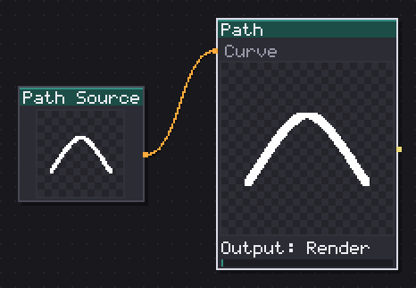
Draws the curve you lay out: line, fill, distance travelled or normals.
Renders the curve itself: a stroke (Output Render), a filled interior (Fill), the distance travelled along it as a grayscale ramp (Gradient), or its tangent as a normal map (Normal), all off the same set of control points or a curve taken from a wired Curve input.
Taper % thins the stroke toward its far end, the one knob that turns a uniform line into a vine, a crack or a whip rather than a length of pipe; it reads distance along the path, so a Closed loop has no far end for it to thin toward. Thickness px is the stroke width in pixels; odd values center it exactly the way a pixel artist expects.
Gradient and Normal outputs are built for feeding something else rather than looking at directly: Gradient into a Curve node lets you re-shape the falloff along a river's length, Normal straight into a Light node lights the stroke as if it had real relief. Wrap around matters only if the path runs off one edge of the canvas and should reappear at the other.
In: Curve (path) · Out: image
Parameters
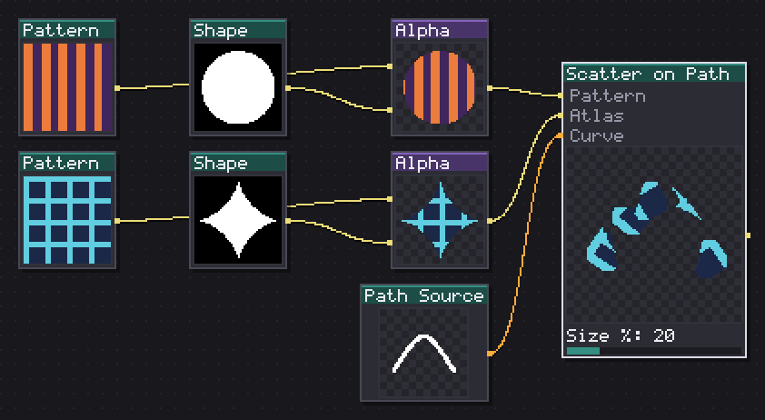
Sows stamps along the curve, aligned to its tangent.
Sows stamps along a curve at a fixed pixel spacing, each one turned to match the curve's own direction: footprints, rivets along a seam, beads on a string, pebbles down a dry riverbed. Takes the same curve a Path Source carries, or its own points if nothing is wired.
Spacing px is measured along the path, not across the canvas, so it stays consistent whether the curve is short and tight or long and sprawling. Align to path rotates every stamp to the local tangent; turn it off for round stamps where rotation would not show anyway, or for stamps you want kept upright regardless of the curve's turns. Start %/End % trims which portion of the curve gets stamps, for a partial trail rather than the whole length.
Taper % shrinks the stamp size toward the far end the same way it thins a Path's stroke; combine it with Jitter scale for pebbles that get both smaller and more irregular as the trail fades out. With no Pattern and no Atlas wired, the shape falls back to a plain Shape (no stamp) disc or square in Colour.
In: Pattern (image), Atlas (image), Curve (path) · Out: image
Parameters
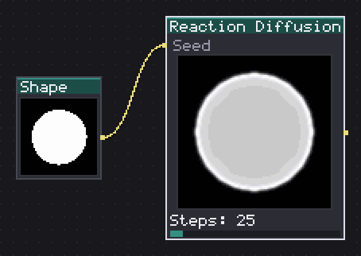
Grows blotches and mazes with the Gray-Scott chemical reaction.
Grows organic blotches and mazes with the Gray-Scott reaction, the same chemistry behind animal coat patterns: a low Feed and a Kill near 55-60 tends toward isolated spots, a Feed and Kill both nearer the middle of their range grows connected mazes and worms instead. There is no formula to read off the two sliders in advance; sweeping them a recipe at a time is how you find the pattern you want.
Steps is literally how long the simulation runs before the node reads out the result: low values catch it early, as small separate blobs just starting to spread, high values let them meet, merge and fill most of the canvas. It is not cheap per step, so keep it near the low end while iterating on Feed/Kill and only raise it once those two are set.
Wire a bright shape into Seed to start the growth from that silhouette instead of the node's own scattered default blobs, useful for growing veins or roots outward from a fixed trunk rather than from nowhere.
In: Seed (image) · Out: image
Parameters
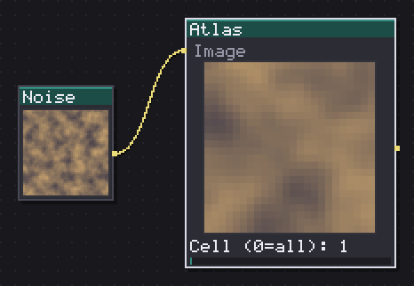
Crops one cell from a sheet split into columns and rows.
Crops one cell out of a sprite sheet split into Cols x Rows, or the whole sheet when Cell is 0. It is the plain, host-independent way to pull a single frame or tile out of a sheet that was not authored as an Aseprite tileset.
Cell is 1-based and wraps at the sheet's own cell count, so animating it across more than Cols x Rows loops rather than reading garbage. Fit decides what happens if the cropped cell does not match this node's own canvas size: Stretch resamples it, Center places it at 1:1 and crops or pads, Tile repeats it at 1:1, the one to use when a cell is meant to be smaller than the working canvas and repeated rather than blown up.
I reach for this ahead of Splatter or Tile's own Atlas input whenever I need to preview or process one specific cell on its own rather than scatter the whole sheet.
In: Image (image) · Out: image
Parameters
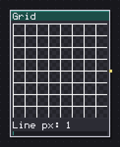
Draws grid lines, either the sprite's or the ones you type.
Draws grid lines at the sprite's own cell size by default, or a typed Cell W/H in pixels. Past the obvious use as an onion-skin or a tile-boundary overlay, with Gap px and a Profile other than Flat it becomes a beveled line, ready to feed Bevel or Normal for a real inset grout line instead of a flat overlay color.
Line px is the line's own width in pixels, capped the same way at every pixel scale so a render at 2x does not draw a line twice as thick as the same graph at 1x. Gap px adds a border of empty space around the line before the cell body starts, which is what a Profile ramps down into. Corner % rounds where lines cross, off the same distance the Pattern family uses.
With Gap px 0 and Profile Flat, the clamps and defaults reproduce the plain grid overlay this node has always drawn, no more expensive than a boolean test per pixel.
In: nothing · Out: image
Parameters
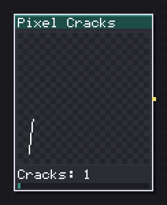
One-pixel cracks that wander and branch, for slate, marble, ice and old wood.
One-pixel cracks that wander and branch across the canvas without ever touching another crack or themselves, for slate, dry mud, marble veining or old plaster. Each crack is walked pixel by pixel with a small random turn at every step; a step that would land next to an already-lit pixel (other than the one just placed) is refused and the whole unfinished run is erased rather than left as a stub.
Wander is how hard that turn pulls per step: near 0 draws straight hairline cracks, high values curl them tightly. Branch % and Branch depth let a crack split as it grows, with depth capping how many generations of branch a single crack can spawn. Direction and Spread aim the whole set of cracks (spread 180, the default, lets them start in any direction; a narrow spread lines them up, useful for a wood-grain crack pattern).
Tiling wraps the walk at the canvas edge so cracks that reach one side continue from the other; with it off, the edge itself acts as a wall the crack cannot cross.
In: nothing · Out: image
Parameters